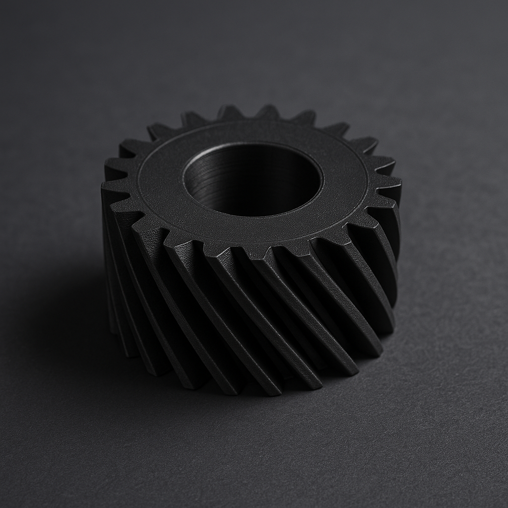
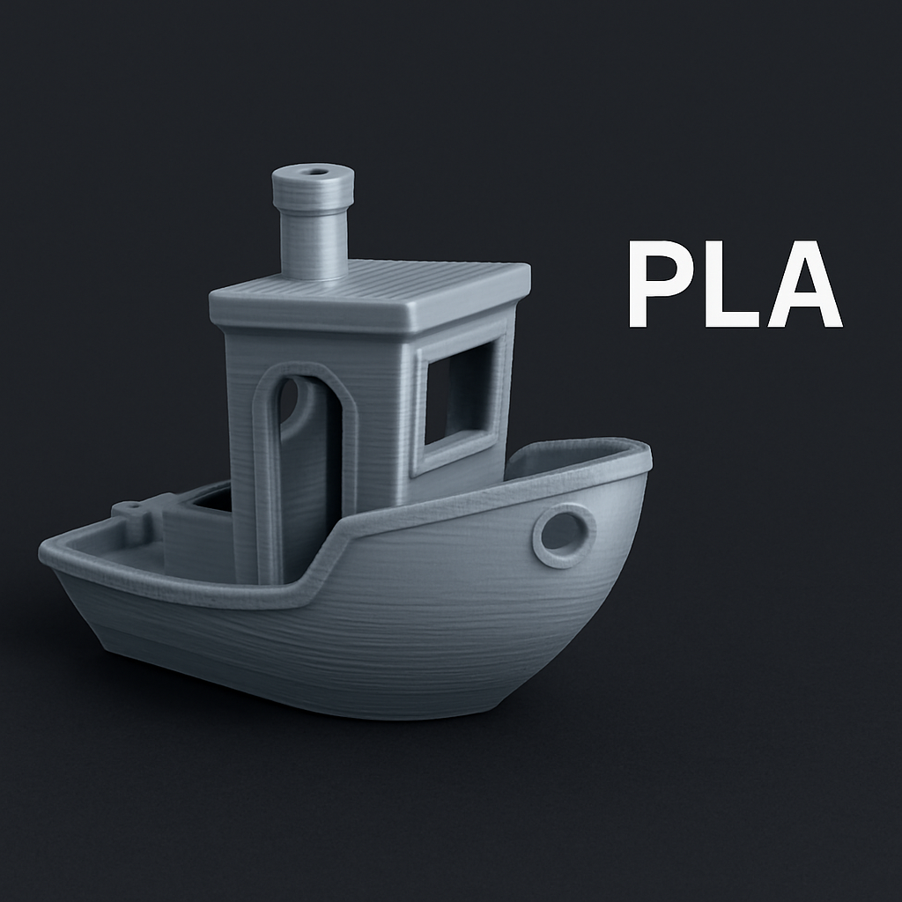
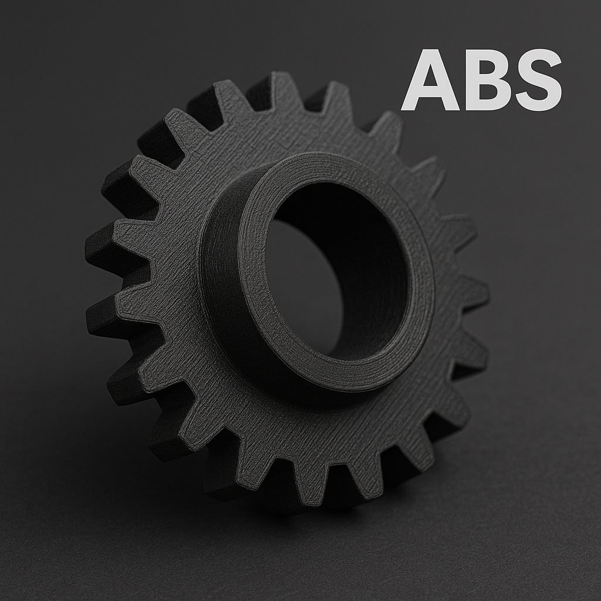
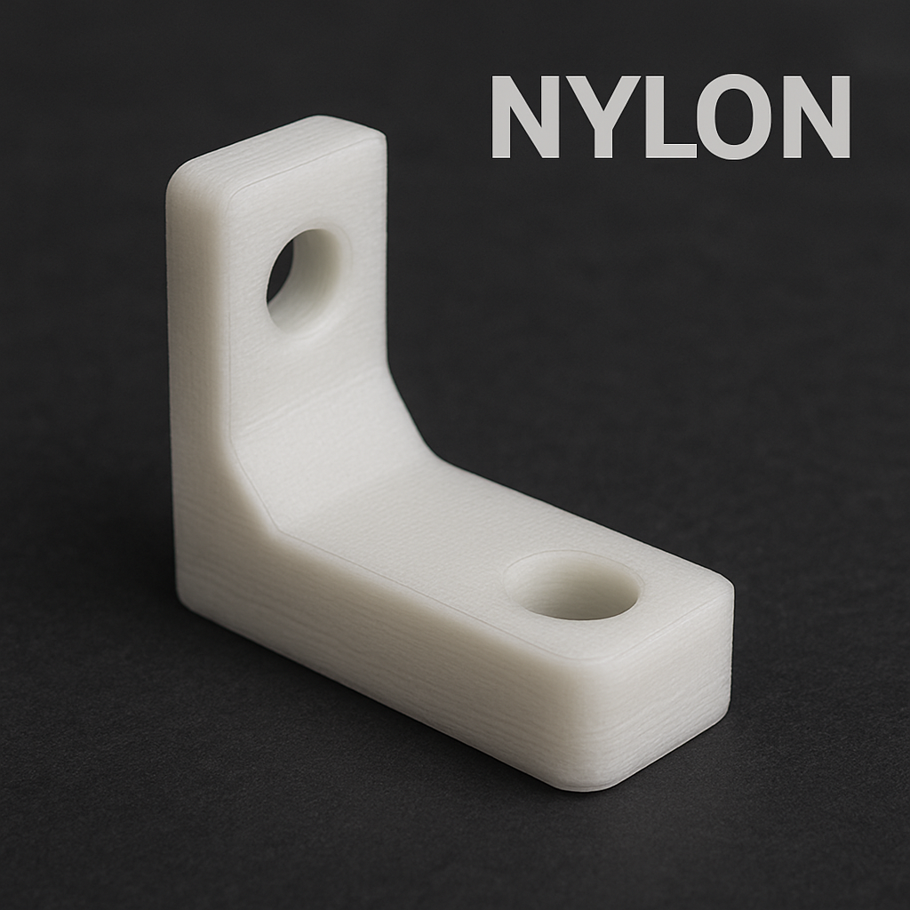

<!DOCTYPE html>
<html lang="es">
<head>
  <meta charset="UTF-8" />
  <meta name="viewport" content="width=device-width, initial-scale=1.0" />
  <title>ProtoKraft</title>
  <style>
    body {
      margin: 0;
      font-family: 'Segoe UI', Tahoma, Geneva, Verdana, sans-serif;
      background: #1f1f1f;
      color: #f5f5f5;
      overflow-x: hidden;
    }
    section {
      max-width: 900px;
      margin: 100px auto;
      padding: 0 20px;
      opacity: 0;
      transform: translateY(50px);
      transition: all 0.8s ease-out;
    }
    section.visible {
      opacity: 1;
      transform: translateY(0);
    }
    h1, h2 {
      color: #f5f5f5;
    }
    ul li {
      margin-bottom: 10px;
    }
    .cta {
      margin-top: 20px;
    }
    .cta a {
      display: inline-block;
      margin-right: 15px;
      padding: 10px 20px;
      background: #0072ce;
      color: white;
      text-decoration: none;
      border-radius: 6px;
      transition: background 0.3s;
    }
    .cta a:hover {
      background: #005ea3;
    }
    header {
      text-align: center;
      padding: 40px 0 0;
    }
    header img {
      max-width: 200px;
      height: auto;
    }
    form {
      display: flex;
      flex-direction: column;
      gap: 10px;
      margin-top: 20px;
    }
    input, textarea {
      padding: 10px;
      border-radius: 4px;
      border: none;
      font-size: 1rem;
    }
    input[type="submit"] {
      background-color: #0072ce;
      color: white;
      cursor: pointer;
      transition: background-color 0.3s;
    }
    input[type="submit"]:hover {
      background-color: #005ea3;
    }
  </style>
</head>
<body>
  <header>
    
  </header>

  <section id="inicio">
    <h1>Impresión 3D en materiales técnicos para proyectos exigentes</h1>
    <p>En <strong>ProtoKraft</strong> transformamos tus ideas en piezas reales, funcionales y resistentes. Somos especialistas en impresión 3D con materiales técnicos como ABS, ASA, HIPS, Nylon y compuestos con fibra de carbono, ideales para prototipos, componentes mecánicos, dispositivos electrónicos y soluciones personalizadas.</p>
  </section>

  <section id="que-hacemos">
    <h2>¿Qué hacemos?</h2>
    <ul>
      <li>Impresión de piezas técnicas con alta precisión y resistencia.</li>
      <li>Modelado y corrección de archivos 3D (STL/OBJ).</li>
      <li>Prototipado rápido para ingenieros, makers y emprendedores.</li>
      <li>Producción bajo demanda de tiradas cortas o piezas únicas.</li>
      <li>Impresión personalizada para productos únicos o creativos.</li>
    </ul>
  </section>

  <section id="porque">
    <h2>¿Por qué elegirnos?</h2>
    <ul>
      <li>Materiales pensados para uso profesional y exigente.</li>
      <li>Asesoramiento personalizado para cada tipo de proyecto.</li>
      <li>Calidad de impresión optimizada con tecnología de punta.</li>
      <li>Producción local con entregas ágiles y soporte directo.</li>
    </ul>
  </section>

  <section id="cta">
    <h2>¿Tenés un diseño en mente?</h2>
    <p>Subí tu archivo, elegí el material y nosotros hacemos el resto. Si todavía no tenés el diseño, también podemos ayudarte a crearlo.</p>
    <div class="cta"></div></section>

  <section id="galeria">
    <h2>Galería de ejemplos</h2>
    <p>Algunos de nuestros trabajos en materiales técnicos y personalizados.</p>
    <div style="display: grid; grid-template-columns: repeat(auto-fit, minmax(250px, 1fr)); gap: 20px; margin-top: 20px;">
      
      
      
    </div>
  </section>

  <section id="materiales">
    <h2>¿Qué material se adapta mejor a tu proyecto?</h2>
    <p>No todos los materiales sirven para lo mismo. Conocé las características de cada uno y elegí el ideal según tu uso, entorno y necesidades.</p>
    <div style="display: grid; grid-template-columns: repeat(auto-fit, minmax(250px, 1fr)); gap: 20px; margin-top: 20px;">
      <div>
        
        <p><strong>PLA:</strong> Resistencia: baja (~50 MPa). Temperatura máx.: 55 °C. Ideal para prototipos visuales y objetos decorativos.</p>
      </div>
      <div>
        
        <p><strong>PETG:</strong> Resistencia: media (~60 MPa). Temperatura máx.: 80 °C. Útil para piezas técnicas con cierta flexibilidad y resistencia química.</p>
      </div>
      <div>
        
        <p><strong>PC (Policarbonato):</strong> Resistencia: alta (~70 MPa). Temperatura máx.: 120 °C. Perfecto para piezas expuestas a calor o impacto.</p>
      </div>
      <div>
        
        <p><strong>PP-T:</strong> Resistencia: media (~50 MPa). Temperatura máx.: 110 °C. Ideal para componentes químicos o flexibles.</p>
      </div>
      <div>
        
        <p><strong>PET-CF:</strong> Resistencia: muy alta (~80 MPa). Temperatura máx.: 100 °C. Usado en piezas estructurales con alta exigencia.</p>
      </div>
      <div>
        
        <p><strong>ABS:</strong> Resistencia: media-alta (~60 MPa). Temperatura máx.: 100 °C. Útil en carcasas, soportes y componentes mecánicos.</p>
      </div>
      <div>
        
        <p><strong>ASA:</strong> Resistencia: media-alta (~60 MPa). Temperatura máx.: 105 °C. Excelente para piezas exteriores resistentes a rayos UV.</p>
      </div>
      <div>
        
        <p><strong>TPU:</strong> material flexible y resistente a la abrasión. Resiste hasta 80 °C y tiene una elongación alta. Ideal para fundas, amortiguadores y piezas con absorción de impacto.</p>
      </div>
      <div>
        
        <p><strong>Fibra de carbono (mezcla):</strong> Resistencia: muy alta (>80 MPa). Temperatura máx.: 100 °C. Perfecto para brazos robóticos y piezas de precisión.</p>
      </div>
      <div>
        
        <p><strong>Nylon:</strong> Resistencia: muy alta (~85 MPa). Temperatura máx.: 100 °C. Ideal para engranajes, bisagras y piezas móviles.</p>
      </div>
    </div>
  </section>

  <section id="repositorios">
    <h2>Repositorios de modelos 3D</h2>
    <p>Explorá miles de modelos gratuitos o de código abierto que podés usar o modificar para tus proyectos:</p>
    <div class="cta">
      <a href="https://www.thingiverse.com/" target="_blank">Thingiverse</a>
      <a href="https://makerworld.com/" target="_blank">MakerWorld</a>
      <a href="https://printables.com/" target="_blank">Printables</a>
      <a href="https://cults3d.com/" target="_blank">Cults3D</a>
      <a href="https://myminifactory.com/" target="_blank">MyMiniFactory</a>
    </div>
  
  
    <h2>Contacto</h2>
    <p>¿Querés hacer una consulta o solicitar un presupuesto personalizado? Escribinos y te responderemos a la brevedad.</p>
    <form action="https://formsubmit.co/protokraftuy@gmail.com" method="POST">
      <input type="hidden" name="_next" value="https://protokraftuy.github.io/protokraft/agradecimiento.html">
      <input type="hidden" name="_captcha" value="false">
      <input type="text" name="nombre" placeholder="Tu nombre" required>
      <input type="email" name="email" placeholder="Tu email" required>
      <textarea name="mensaje" rows="5" placeholder="Escribí tu mensaje..." required></textarea>
      <input type="submit" value="Enviar mensaje">
    </form>
  </section>

  <script>
    const sections = document.querySelectorAll('section');

    const observer = new IntersectionObserver(entries => {
      entries.forEach(entry => {
        if (entry.isIntersecting) {
          entry.target.classList.add('visible');
        }
      });
    }, {
      threshold: 0.1
    });

    sections.forEach(section => {
      observer.observe(section);
    });
  </script>
</body>
</html>
